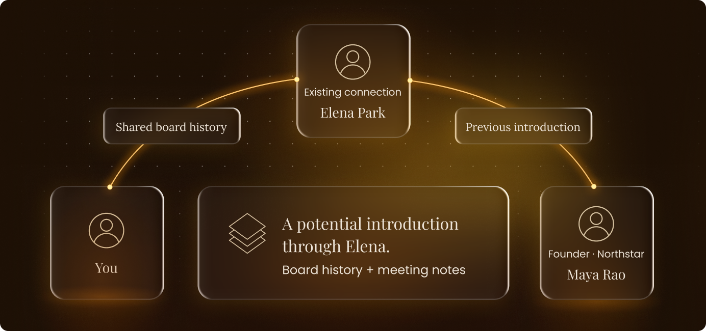
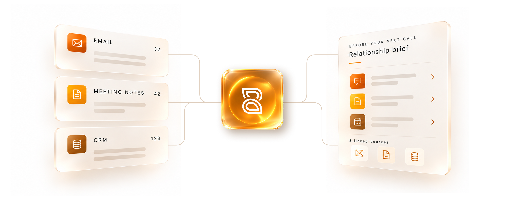
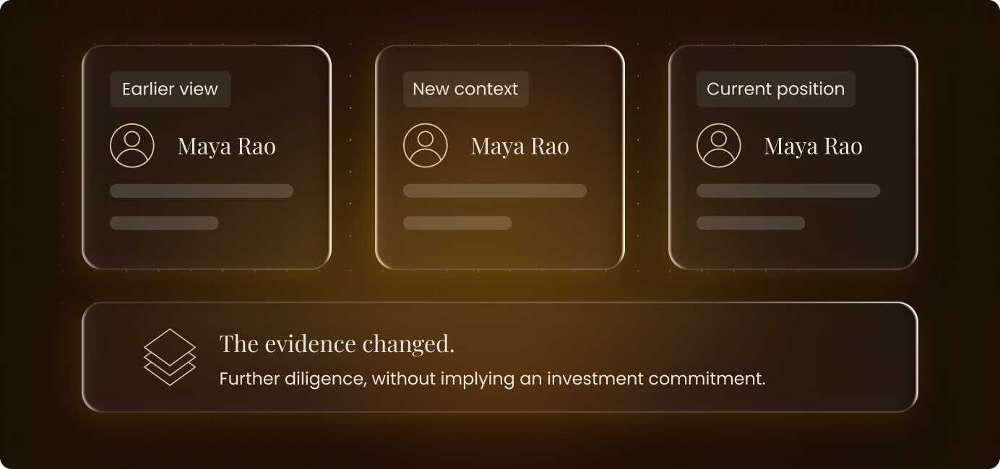
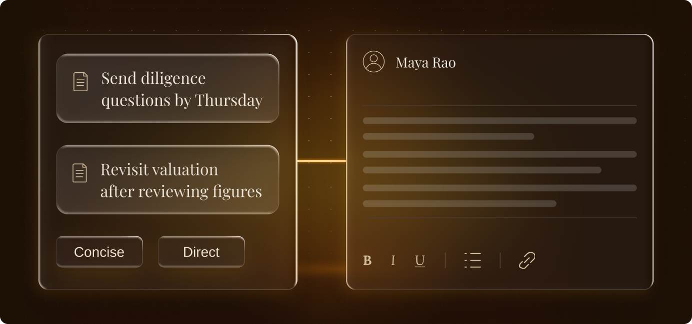
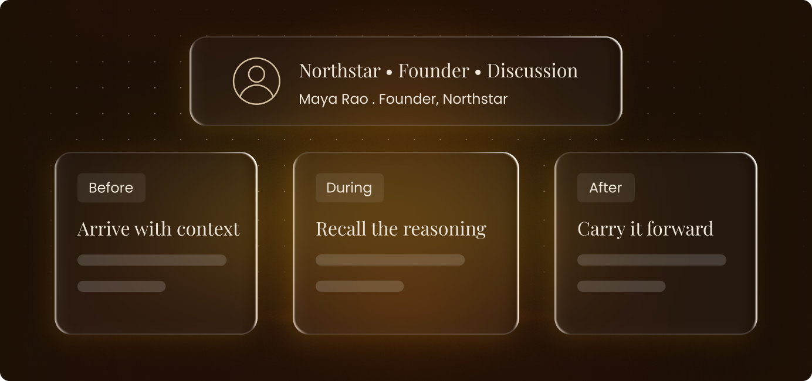

Find the right way in
Connect people, firms and shared history to uncover relationship paths worth pursuing.

Kairos Partner Graph unifies relationship context, commitments, and conversations
to prepare, respond, and follow through in your own voice.

Trace how positions evolve, bring context to daily tools, govern access,
and extend workflows on a trusted foundation.
Connect people, firms and shared history to uncover relationship paths worth pursuing.

Trace how views, objections and commitments have evolved, including what you agreed to and what you held back.

Draft follow-ups that reflect your phrasing, priorities and commitments, ready for your review.

Prepare before a meeting, recall earlier discussions during it, and carry new context into the next conversation.

Your relationships carry years of conversations, decisions and commitments. Partner Graph connects that history so you can focus on what comes next.
Understand how a position evolved, what prompted the change, and which commitments still stand.
New meetings, notes and replies enrich the graph, giving your next conversation a more informed starting point.
Review the correspondence, meeting notes and records behind a briefing, so you can assess the evidence for yourself.
You control which insights are shared with the firm. Access is governed by permissions, and your existing source systems stay in place.
Explore how Kairos Partner Graph can support your relationships,
judgement and follow-through.